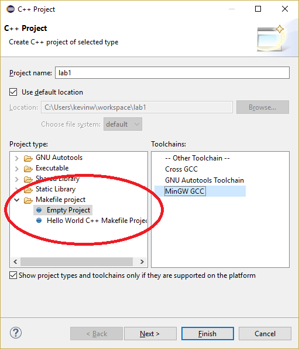

COMP 2012 Object-Oriented Programming and Data Structures
Lab 1 Makefile and Separate Compilation

Separate Compilation
While modern IDEs like Eclipse can automatically build your program from the provided source code in most scenarios, with Makefile you can build your program in a highly customizable way that utilizes separate compilation. You will learn about the basic usage of Makefile in this lab. Please read the Makefile lecture notes.
What is separate compilation?
Suppose you have a program that consists of 3 cpp files: file1.cpp, file2.cpp, and file3.cpp.
With the g++ command, one can compile the program with the following command that produces an executable named a.out
g++ -o a.out file1.cpp file2.cpp file3.cpp
Any changes to any of the 3 files (e.g., just editing a line in file1.cpp) will require the g++ compiler to compile all 3 cpp files again to generate the updated executable.
This is inefficient. To alleviate this problem, we can make use of separate compilation.
To perform separate compilation, we use the following commands instead.
g++ -c file1.cpp g++ -c file2.cpp g++ -c file3.cpp g++ -o a.out file1.o file2.o file3.o
Each of the first 3 commands will individually compile fileN.cpp
into fileN.o - an object file (which is not executable) containing
the compiled code for the corresponding cpp file. The last command then simply
links those object files together to generate the final executable a.out.

Now, say, if a line is edited in file1.cpp, we just need to execute:
g++ -c file1.cpp g++ -o a.out file1.o file2.o file3.o
And an updated executable would be generated because the existing file2.o and file3.o can simply be reused.
Makefile
Makefile allows us to create a set of compilation rules for your program (or called project in Eclipse). It is very useful for separate compilation. A Makefile consists of a number of rules. The rules have the following syntax:
[Name of rule #1]: [List of dependent files, separated by a space] [Press a tab character here][Command 1 to be executed] [Press a tab character here][Command 2 to be executed] ... [Press a tab character here][Command N to be executed] [Empty lines....] [Name of rule #2]: [List of dependent files, separated by a space] [Press a tab character here][Command 1 to be executed] [Press a tab character here][Command 2 to be executed] ... [Press a tab character here][Command N to be executed] [Empty lines....]
When a rule is executed, all dependent files will first be generated using the rules of the same names (e.g., a dependent file "burger.exe" can be generated by the rule named "burger.exe") unless the files are already there and up-to-date. Then, after all dependent files are generated, the commands under the rule will be executed.
There are two specials rules for Eclipse - "all" and "clean". Eclipse will execute the rule "all" when you build your project (the hammer button on your Eclipse's tools bar / Project->Build Project) and will execute the rule "clean" when you clean your project (Project->Clean). Note that, however, in general the first rule (not necessarily called "all") is considered as the default rule (what to build when the "make" utility is used) in other environments.
You need these three commands in this lab.
To create an object file (e.g., bread.o) from a source file (e.g., bread.cpp):
g++ -std=c++11 -o Output filename -c Source file name
To link the object files together to make an executable:
g++ -std=c++11 -o Output filename Object file name 1 Object file name 2 ... Object file name N
To delete files:
rm -f File name pattern
Meta Rule
You may notice that we have many .cpp files and most of them are doing exactly the same line. To save up the copy and paste work, we can define a meta rule instead. The following meta rule is used to generate any_name.o file:%.o: %.cpp g++ -std=c++11 -c $< -o $@The
% symbol means any name. So the rule simply says any .o file
depends on its corresponding .cpp file. The command to be executed under this rule
is to use g++ to compile the .cpp source file to its .o object file.
-
-c $<: Specify the source file name%.cppas the first dependent file. -
-o $@: Specify the output file name%.oas the target.
Building your program
After you have finished your Makefile, just build your program as usual like you do with regular Eclipse projects. (E.g., clicking the hammer button.) As you are working with a Makefile project, Eclipse will use the rules you specify in your Makefile to build your program.
Running the program
Right click the executable file in the Project Explorer, and choose Run as... > Local C/C++ Application.
Junk Food Store
In this lab we are going to practise separate compilation using Makefile. We are going to make some junk food using C++ code. You are given some source codes (.h/.cpp) which are almost complete. You will need to work with the Makefile and add a few lines in some files.
You are probably familiar with Eclipse already if you have taken COMP2011. If not, you may refer to the basic usage of Eclipse here.
Creating a Makefile project is a bit different from creating a regular C++ project. The steps are as follows.
Note: We usually write Makefile with a capital "M" due to a convention. For details, read this discussion.
Creating a Makefile project
Follow the following steps to create a C++ project called "lab1". In particular, choose "Empty Project" under the "Makefile project" project type and select "MinGW GCC" as the compiler.
Adding a Makefile
Add a new file by clicking the project "lab1" under the Project Explorer, then choosing "New" -> "File".
Name the file as "Makefile".
Adding the source code
Download the source files from the Download section. Unzip the zip-file and add them to your project. (E.g., drag and drop the extracted files to the project in Project Explorer)
Edit the Makefile
Open the Makefile you created earlier in Eclipse and put in the following content.
BURGER = burger.o bread.o meat.o CHOCOLATE = chocolate.o MUFFIN = muffin.o bread.o chocolate.o #You might want to use the variable $(COMBO) some points later in this lab. #The variable will take the union of the set BURGER, CHOCOLATE, and MUFFIN. COMBO = $(sort $(BURGER) $(CHOCOLATE) $(MUFFIN)) #@TODO Edit all target all: chocolate.exe burger.exe #@TODO Add new targets chocolate.exe: $(CHOCOLATE) mainChocolate.cpp g++ -o $@ -std=c++11 $(CHOCOLATE) mainChocolate.cpp burger.exe: $(BURGER) mainBurger.cpp g++ -o $@ -std=c++11 $(BURGER) mainBurger.cpp %.o: %.cpp g++ -std=c++11 -c $< -o $@ clean: rm -f *.o *.exe
Beware that the indentations are all just single tab characters as described in the next section.
The program "burger.exe" should show:
Bread! Frozen Meat! Make Burger!
Lab tasks
Task 1: Create a Makefile Project and Run the exe files
Create a makefile project in your IDE to produce "burger.exe" and "chocolate.exe". You should be able to finish this task without writing any code. When you build the project, your console should show:g++ -std=c++11 -c chocolate.cpp -o chocolate.o g++ -o chocolate.exe -std=c++11 chocolate.o mainChocolate.cpp g++ -std=c++11 -c burger.cpp -o burger.o g++ -std=c++11 -c bread.cpp -o bread.o g++ -std=c++11 -c meat.cpp -o meat.o g++ -o burger.exe -std=c++11 burger.o bread.o meat.o mainBurger.cppVerify your result by running the exe files.
Task 2: Create the betterBurger.exe
Add a target called betterBurger.exe which "upgrades" burger.exe with a better meat - betterMeat.cpp - which is an upgrade version of meat.cpp. By editing Makefile only, you shall be able to complete the task. (Apart from adding new rules for betterBurger.exe, you also need to add the target betterBurger.exe in the rule all as well). When you build the project an additional file betterBurger.exe should be produced in addition to burger.exe and chocolate.exe. When you run this file, it shows:
Bread! Fresh Meat! Make Burger!
Task 3: Create the combo.exe
A "combo" meal contains a burger, a chocolate, and a muffin. The filemainCombo.cpp has been written for you. This should be the driver
program of combo.exe. You need to write a rule for combo.exe in the
Makefile. On top of it, you will need to add the following code in some header (.h) files.
//replace XXXX by the name of your .h file; e.g., __BURGER_H #ifndef __XXXX_H #define __XXXX_H #endifThe expected output for combo.exe should be:
Have a combo! Bread! Frozen Meat! Make Burger! Chocolate! Bread! Make Muffin! Chocolate!
Reading the .cpp/.h files
There are many files to read while most of them contain one or two lines of code only. You are suggested to begin with the files mainBurger.cpp, mainChocolate.cpp, mainCombo.cpp.
//mainBurger.cpp
#include "burger.h"
int main() {
Burger b;
return 0;
}
//mainChocolate.cpp
#include "chocolate.h"
int main() {
Chocolate c;
return 0;
}
//mainCombo.cpp #include "burger.h" #include "chocolate.h" #include "muffin.h" #includeusing namespace std; int main() { cout << "Have a combo! " << endl; Burger b; Muffin m; cout << endl; Chocolate c; return 0; }
So for example, to produce burger.exe, it needs a class called Burger which is composed of the class Bread and the class Meat. You need to deduce the class dependency and write them in the Makefile.
Download
For this lab, you can download the source files here. Unzip the zip file and add them to your project. (e.g., drag and drop the extracted files to the project in Project Explorer)